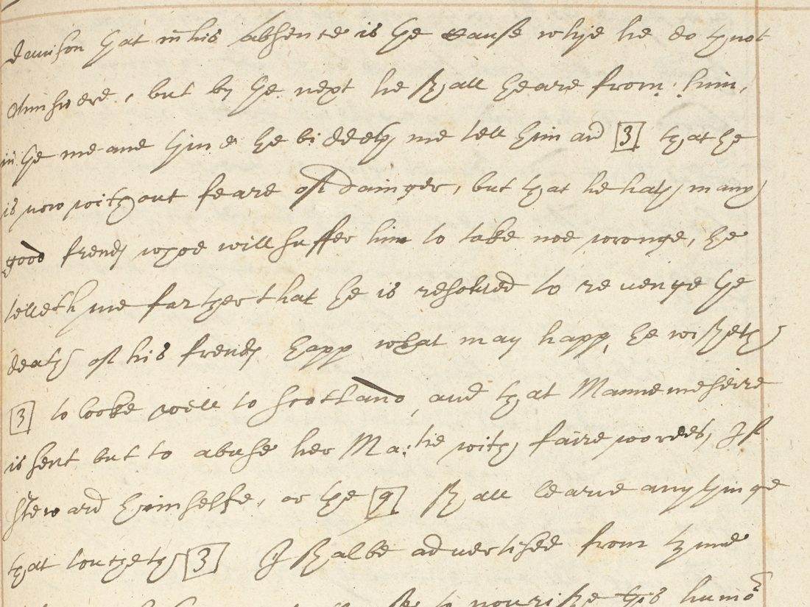

01 What the record is
The page heads carry the running date “November 1572”. The letters are copied one after another with their addresses, in one hand, so this is a register, not the letters as sent. DECODE images P5 and P6 are in reverse folio order.
| Image | Folio | Content |
|---|---|---|
| P1 | 367r | End of Leicester to Walsingham (“the [blank] of November 1572”); Burghley to Walsingham, Westminster, 7 November 1572, begins |
| P2 | 367v | Burghley ends; Walsingham to Sir Thomas Smith, begins |
| P3–P4 | 368r–v | Walsingham to Smith, Paris, 27 November 1572; Walsingham to Burghley begins |
| P6, P5 | 369r, 369v | Walsingham to Burghley, Paris, 27 November 1572; Walsingham to Smith of 5 December begins |
02 The cipher passages

Burghley, 7 November:
- “a person come, as he saith, from Florence [9]”
- “letters which the partie hath written to Rome [9]”
- “The partie 776 + w5 ‡ 6 3 ∩ 6 remaineth here in London … and yet I doubt the P. will smell of him”. This is a letter cipher, probably spelling the person’s name.
Walsingham to Burghley, 27 November:

- “delivered to Steward, for that Glasgow [7] was not here”
- “he biddeth me tell him as [3] that he is now without fear of danger”
- “He wisheth [3] to look well to Scotland, and that Manessier is sent but to abuse her Majesty with fair words”
- “If Steward himself, or the [9], shall learn any thing that toucheth [3], I shall be advertised”
- “within these 8 days … [7] protested that he should never be quiet so long as the exercise of Religion continued in any one place of Christendom”
- “both he and Spain shall, for the avoiding of suspicion of the Legate’s coming, entertain the [3] with good words”
- “I have requested H to be throughly advertised”
03 What reads, and what was tried
[3] = the Queen. In all four places the code stands for a person English policy turns on: someone warned to look to Scotland, someone news may “touch”, someone France and Spain mean to “entertain with good words”. The Queen fits every time, and no other candidate fits all four. Grade C (consistent context, no key).
[7], [9], H. [7] follows “Glasgow” (the Bishop of Glasgow, Mary Stuart’s ambassador) and is also the man who swore never to rest while the Reformed religion survived. That points to the Cardinal of Lorraine or the Duke of Guise, but a code that follows a name may mark a title rather than a person. [9] follows both “Florence” and “Rome” and then stands alone (“the [9]”). Its three uses do not settle on one person, so it stays open.
The nine-sign run. It mixes digits, a letter and signs. Nine symbols of an unknown alphabet cannot be read without the key.
What was checked: the sibling records from the same volume (R8357, R8363) have no key. The pages carry no glosses. Tomokiyo’s survey of Elizabethan ciphers (Cecil–Norris, Throckmorton, Stafford) has no Walsingham key of 1570–73. CSP Foreign vol. x does not calendar these letters. Digges prints them without deciphering the codes.
04 What remains
- The letter run “776 + w5 ‡ 6 3 ∩ 6”, f. 367r: too short, no key.
- Codes [7] (×2), [9] (×3) and H: no key material.
Leads: the originals Walsingham sent (Hatfield or SP 70) may carry Burghley’s clerk’s decipherment, and Digges’s other letters of 1571–73 use the same boxed codes, so a full inventory of them could fix [7] and [9].
05 Sources
- British Library, Harley MS 260 ff. 367r–369v, via DECODE R8361 (images, login).
- Dudley Digges, The Compleat Ambassador (London 1655), pp. 297–301.
- Calendar of State Papers Foreign, Elizabeth, vol. x, 1572–1574, ed. A. J. Crosby (1876), November 1572 (BHO).
- Satoshi Tomokiyo, Cryptiana, “Elizabethan ciphers”.
Notes, transcription and profile: r8361/.